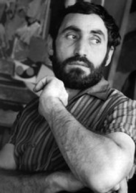
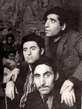

Մինաս Ավետիսյան

Հանրահայտ գործերից են` «Տարվա եղանակները» (1960-63թթ), «Իմ ծնողները» (1962թ.), «Հանդիպում» (1965թ.), «Հորս դիմանկարը» (1965թ.), «Շեմին» (1967թ.) և այլ գործեր: Նկարներից մի քանիսը վերաբերում են հայ ժողովրդի անցյալին` հատկապես 1915թ. Հայոց Մեծ եղեռնին, որոնցից մազապուրծ են եղել նաև նկարչի ծնողները: Այդ ժամանակաշրջանին են պատկանում «Տեր Զորի ճանապարհին» (1964թ.), «Գաղթ» (1965-67թթ), հայկական գյուղաշխարհը պատկերող` «Ջուլհակուհիներ» (1958թ.), «Տերևներ հավաքողները» (1960թ.), «Ջաջուռ» (1960թ.), «Հաց են թխում» (1963թ.), «Խնոցի են հարում» (1964թ.) և այլ կտավներ: Պատկերները կառուցել է գունային ցայտուն հակադրությամբ, արտահայտել լուսավոր, քնարական տրամադրություններ, երբեմն` ողբերգական շեշտերով («Ինքնանկար փշով», 1967թ., «Խաչելություն», 1975թ.): Շարունակել և ստեղծագործաբար զարգացրել է նաև հայ մանրանկարչության ավանդները: Հայտնի են Երևանում, Գյումրիում, Վահրամաբերդ գյուղում նկարչի ստեղծած հրաշալի որմնանկարները: 1962թ. ձևավորել է Երևանի Ա.Սպենդիարյանի անվան օպերայի և բալետի թատրոնում բեմադրված Ջ.Ռոսսինիի «Տիկնիկների աշխարհում», Մ.Ռավելի «Իսպանուհին. Բոլերո» և Ջ.Գերշվինի «Նեգրական թաղամաս», Ս.Պրոկոֆևի «Մոխրոտը», Է.Հովհաննիսյանի «Անտունի» բալետները: 1971թ. ձևավորել է Ա.Սպենդիարյանի «Ալմաստ», 1974թ.` Ա.Խաչատրյանի «Գայանե» օպերաները: 1972թ. նկարչի արվեստանոցում բռնկված հրդեհը ոչնչացրել է ներսում գտնվող հարյուրավոր պատրաստի նկարներ, մի քանի կտավ ոչնչացել է Բեյրութի ցուցահանդեսում` քաղաքի ռմբակոծության հետևանքով, 1988թ. Սպիտակի երկրաշարժից վնասվել են Գյումրիում ստեղծած նրա որմնանկարները, որոնք 2008թ. տեղափոխվել են Ջաջուռ` նկարչի տուն-թանգարան (հիմնադրվել է 1982թ.): 1967թ. արժանացել է Հայաստանի վաստակավոր նկարչի կոչման: Մահացել է Երևանում, ավտովթարից, սակայն մահվան հանգամանքները մինչ օրս մնում են չպարզված:
Գեղանկարիչ
20 հուլիս, 1928 - 24 փետրվար, 1975
Ծնվել է Շիրակի մարզի Ջաջուռ գյուղում: 1947-52թթ սովորել է Երևանի Փ.Թերլեմեզյանի անվան գեղարվեստի ուսումնարանում, 1952-54թթ` Երևանի գեղարվեստաթատերական ինստիտուտում: 1960թ. ավարտել է Լենինգրադի գեղանկարչության, քանդակագործության և ճարտարապետության ինստիտուտը: Եղել է բազմաժանր նկարիչ, ստեղծել է ավելի քան 500 կտավ, հարյուրավոր գծանկարներ, մեծածավալ որմնանկարներ, դիմանկարներ, նատյուրմորտներ: Նրա արվեստին բնորոշ են վառ և զուսպ գույների համադրումը, հայրենի բնության առանձնահատկությունների գեղանկարչական խտացումը, կենսահաստատ արտահայտչականությունը: Լենինգրադի արվեստի ակադեմիան և Էրմիտաժը նշանակալի դեր են խաղացել արվեստագետի ինքնատիպ ոճի ձևավորման գործում:Հանրահայտ գործերից են` «Տարվա եղանակները» (1960-63թթ), «Իմ ծնողները» (1962թ.), «Հանդիպում» (1965թ.), «Հորս դիմանկարը» (1965թ.), «Շեմին» (1967թ.) և այլ գործեր: Նկարներից մի քանիսը վերաբերում են հայ ժողովրդի անցյալին` հատկապես 1915թ. Հայոց Մեծ եղեռնին, որոնցից մազապուրծ են եղել նաև նկարչի ծնողները: Այդ ժամանակաշրջանին են պատկանում «Տեր Զորի ճանապարհին» (1964թ.), «Գաղթ» (1965-67թթ), հայկական գյուղաշխարհը պատկերող` «Ջուլհակուհիներ» (1958թ.), «Տերևներ հավաքողները» (1960թ.), «Ջաջուռ» (1960թ.), «Հաց են թխում» (1963թ.), «Խնոցի են հարում» (1964թ.) և այլ կտավներ: Պատկերները կառուցել է գունային ցայտուն հակադրությամբ, արտահայտել լուսավոր, քնարական տրամադրություններ, երբեմն` ողբերգական շեշտերով («Ինքնանկար փշով», 1967թ., «Խաչելություն», 1975թ.): Շարունակել և ստեղծագործաբար զարգացրել է նաև հայ մանրանկարչության ավանդները: Հայտնի են Երևանում, Գյումրիում, Վահրամաբերդ գյուղում նկարչի ստեղծած հրաշալի որմնանկարները: 1962թ. ձևավորել է Երևանի Ա.Սպենդիարյանի անվան օպերայի և բալետի թատրոնում բեմադրված Ջ.Ռոսսինիի «Տիկնիկների աշխարհում», Մ.Ռավելի «Իսպանուհին. Բոլերո» և Ջ.Գերշվինի «Նեգրական թաղամաս», Ս.Պրոկոֆևի «Մոխրոտը», Է.Հովհաննիսյանի «Անտունի» բալետները: 1971թ. ձևավորել է Ա.Սպենդիարյանի «Ալմաստ», 1974թ.` Ա.Խաչատրյանի «Գայանե» օպերաները: 1972թ. նկարչի արվեստանոցում բռնկված հրդեհը ոչնչացրել է ներսում գտնվող հարյուրավոր պատրաստի նկարներ, մի քանի կտավ ոչնչացել է Բեյրութի ցուցահանդեսում` քաղաքի ռմբակոծության հետևանքով, 1988թ. Սպիտակի երկրաշարժից վնասվել են Գյումրիում ստեղծած նրա որմնանկարները, որոնք 2008թ. տեղափոխվել են Ջաջուռ` նկարչի տուն-թանգարան (հիմնադրվել է 1982թ.): 1967թ. արժանացել է Հայաստանի վաստակավոր նկարչի կոչման: Մահացել է Երևանում, ավտովթարից, սակայն մահվան հանգամանքները մինչ օրս մնում են չպարզված:

×

Ձեր հարցերը, մտահոգությունները կամ առաջարկությունները կարող եք ուղարկել hayasrtist@mail.ru էլեկտրոնային հասցեին, ինչպես նաև մեր ֆեյսբուքյան էջի հետադարձ կապին: